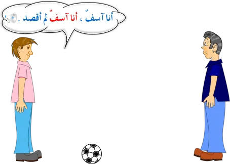
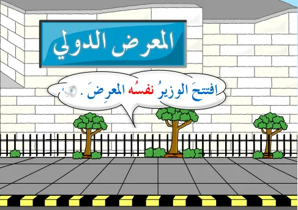
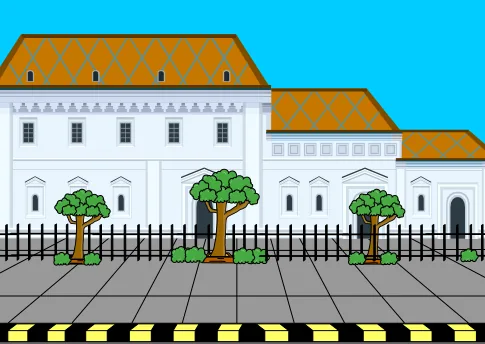
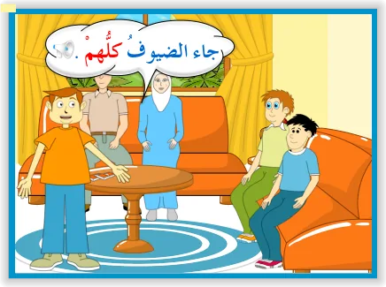
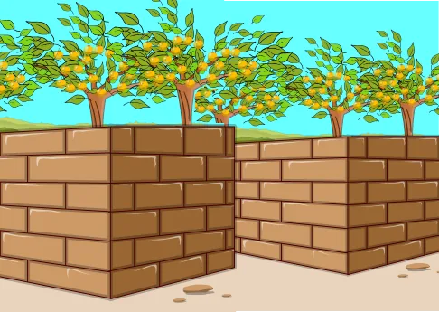

التوابع: التوكيد اللفظي والمعنوي
الدرس 1 من 4 — التراكيب
أُلاحظ
أقرأ الأمثلة وأستمع إليها، وألاحظ الكلمات الملوّنة.
- شكراً شكراً.
- أَقْبَلَ أَقْبَلَ الرَّبِيعُ.
- نَعَمْ نَعَمْ، سَأَحْضُرُ.
- أَنَا آسِفٌ، أَنَا آسِفٌ، لَمْ أَقْصِدْ.
أستنتج
التوكيدتابعٌ يُزيل عن متبوعه ما قد يتوهّمه السامع من احتمالاتٍ ممّا ليس مقصوداً.
التوكيد نوعان
- توكيد لفظي يكون بتكرار اللفظ المراد توكيده، سواءٌ أكان اسماً أم فعلاً أم حرفاً أم جملةً اسميةً أم فعلية.

تكرار جملة اسميةأَنَا آسِفٌ، أَنَا آسِفٌ، لَمْ أَقْصِدْ.تكرار اسمشكراً شكراً.تكرار فعلأَقْبَلَ أَقْبَلَ الرَّبِيعُ.تكرار حرفنَعَمْ نَعَمْ، سَأَحْضُرُ.تكرار جملةاللهُ أكبرُ، اللهُ أكبرُ. - توكيد معنوي يكون بذكر كلماتٍ أشهرها: نفس، عين، جميع، كلّ، كلا، كلتا، مضافةً إلى ضمير.

اِفْتَتَحَ الْوَزِيرُ نَفْسُهُ الْمَعْرِضَ.
اِشْتَرَيْتُ الْبَيْتَ عَيْنَهُ
جَاءَ الضُّيُوفُ كُلُّهُمْتَخَرَّجَتِ الطَّالِبَاتُ جَمِيعُهُنَّحَضَرَ خَالِدٌ نَفْسُهُ الْحَفْلَةَ.حَضَرَتْ فَاطِمَةُ نَفْسُهَا الْحَفْلَةَ.الْمُهَنْدِسُونَ جَمِيعُهُمْ بَارِعُونَ.
مرفوعمنصوبمجروراضغط على الكلمة الملوّنة لترى إعرابها، وعلى 🔊 لتستمع.
يُشترط في كلّ لفظٍ من ألفاظ التوكيد المعنوي أن يتّصل بضمير يربطه بالمؤكَّد، ويطابقه في التذكير والتأنيث، والإفراد والتثنية والجمع، ويطابقه في الإعراب: رفعاً أو نصباً أو جرّاً.
رفعاً: غَرِقَ الطِّفْلُ الصَّغِيرُ نَفْسُهُ فِي الْبَحْرِ.
نصباً: شَاهَدْتُ الرَّجُلَيْنِ كِلَيْهِمَا يَأْكُلَانِ بِنَهَمٍ.
جرّاً: وَجَدْتُ الْقِطَّةَ فِي الْحَدِيقَةِ نَفْسِهَا
كلا وكلتا
تُعامَل «كلا» و«كلتا» عند اتّصالهما بالضمير معاملة الملحق بالمثنّى: تُرفعان بالألف، وتُنصبان وتُجرّان بالياء، ويكون الضمير المتّصل في محلّ جرّ مضاف إليه.

الْمَزْرَعَتَانِ كِلْتَاهُمَا أَشْجَارُهُمَا مُثْمِرَةٌ.
الرَّجُلَانِ كِلَاهُمَا أَنِيقَانِ.
الْأَخَوَانِ كِلَاهُمَا مُتَفَاهِمَانِ.
أُطبّق
1نوع التوكيد في: «جَاءَ جَاءَ الْمَطَرُ»
2نوع التوكيد في: «صَافَحْتُ الْمُدِيرَ نَفْسَهُ»
3اختر الصحيح: «حَضَرَتِ الطَّالِبَتَانِ …»
4اختر الصحيح: «قرأتُ القصّةَ …»
5اختر الصحيح: «مَرَرْتُ بِالْأَوْلَادِ …»
6علامة نصب «كليهما» في: «رَأَيْتُ الْوَلَدَيْنِ كِلَيْهِمَا»
7ما إعراب «نفسُه» في: «اِفْتَتَحَ الْوَزِيرُ نَفْسُهُ الْمَعْرِضَ.»؟
8ما إعراب «عينَه» في: «اِشْتَرَيْتُ الْبَيْتَ عَيْنَهُ»؟
إجابات صحيحة من أول محاولة:
أتمرّن أكثر
أستمع، ثمّ أرتّب الكلمات لأكوّن الجملة:
أستمع، ثمّ أكتب ما أسمع:
أستمع، ثمّ أكتب ما أسمع:
✓ أنهيتَ هذا الدرس
دروس العربية — للاستعمال التعليمي.